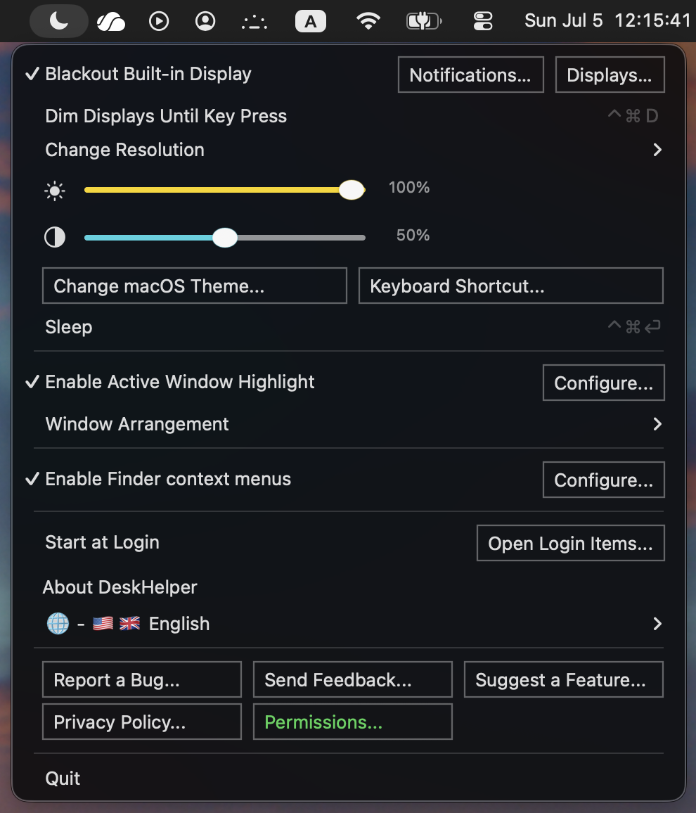
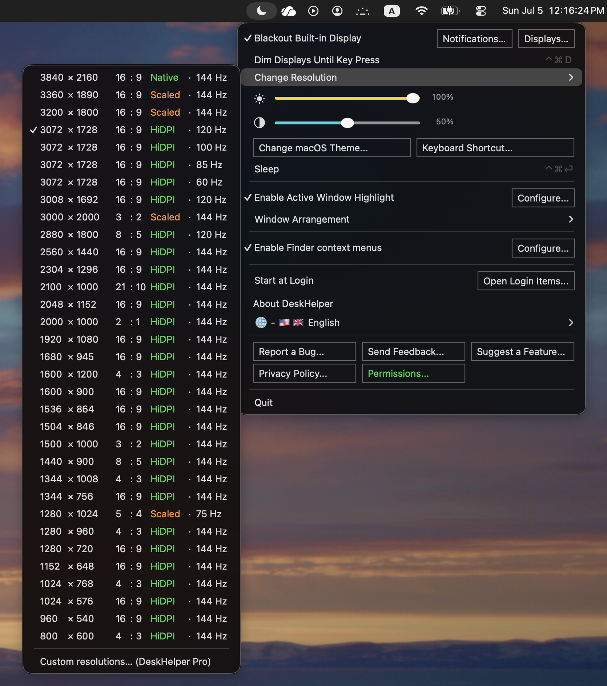
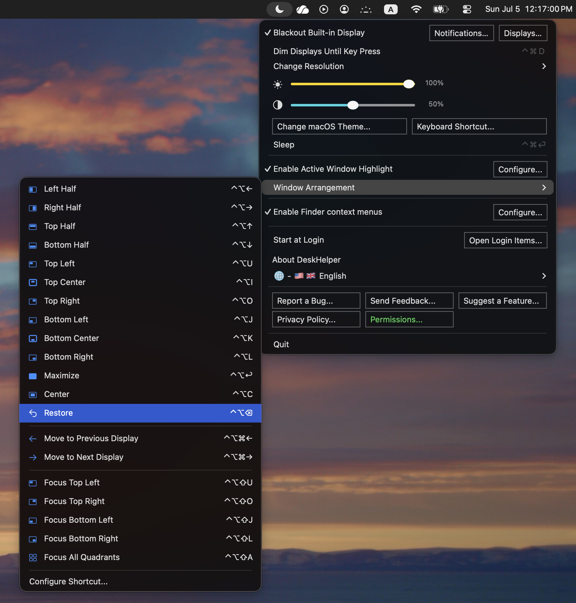
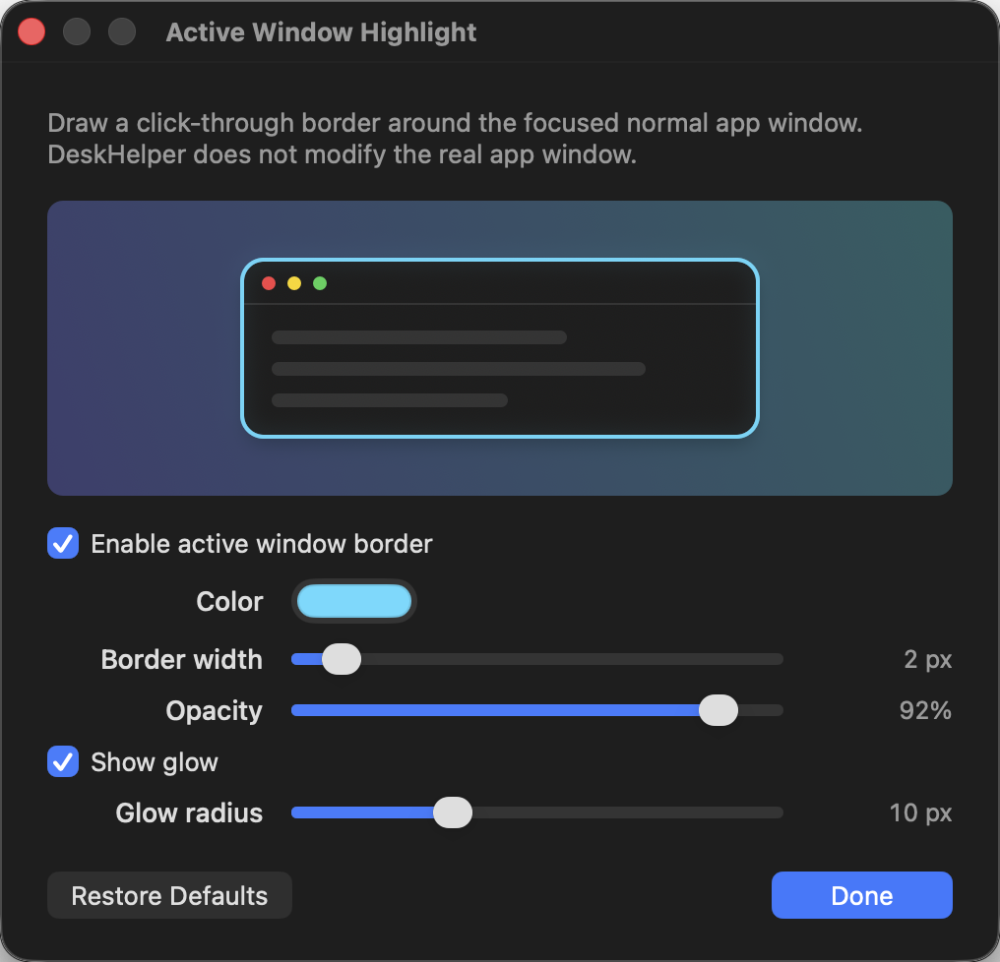

डिस्प्ले और विंडो नियंत्रण
सिस्टम सेटिंग्स, तृतीय-पक्ष विंडो टूल और डिस्प्ले मेनू के बीच भटके बिना अपने दृश्य कार्यक्षेत्र को संभालें।
- बाहरी मॉनिटर पर मिररिंग के दौरान MacBook की इनबिल्ट स्क्रीन को काला करें।
- मिररिंग बदलें, कुंजी दबने तक डिस्प्ले मंद करें, स्लीप, रीस्टार्ट, शट डाउन करें और चमक या कंट्रास्ट समायोजित करें।
- HiDPI सहित, अपने डिस्प्ले के समर्थित मोड के बीच तेज़ी से स्विच करें।
- विंडो को आधे हिस्सों, कोनों, केंद्र, फ़ुल-स्क्रीन लेआउट, दूसरे डिस्प्ले या दूसरे डेस्कटॉप पर ले जाएँ।
- सक्रिय विंडो को क्लिक-पार होने वाले अनुकूलनीय बॉर्डर से हाइलाइट करें।
कस्टम HiDPI रिज़ॉल्यूशन प्रीसेट DeskHelper Pro का हिस्सा हैं; DeskHelper उन्हीं मोड के बीच स्विच करता है जिन्हें आपका डिस्प्ले पहले से समर्थन देता है।



